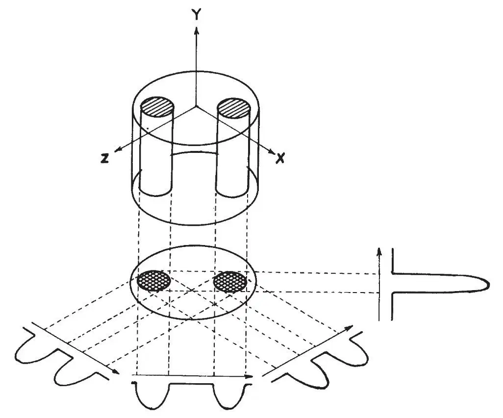
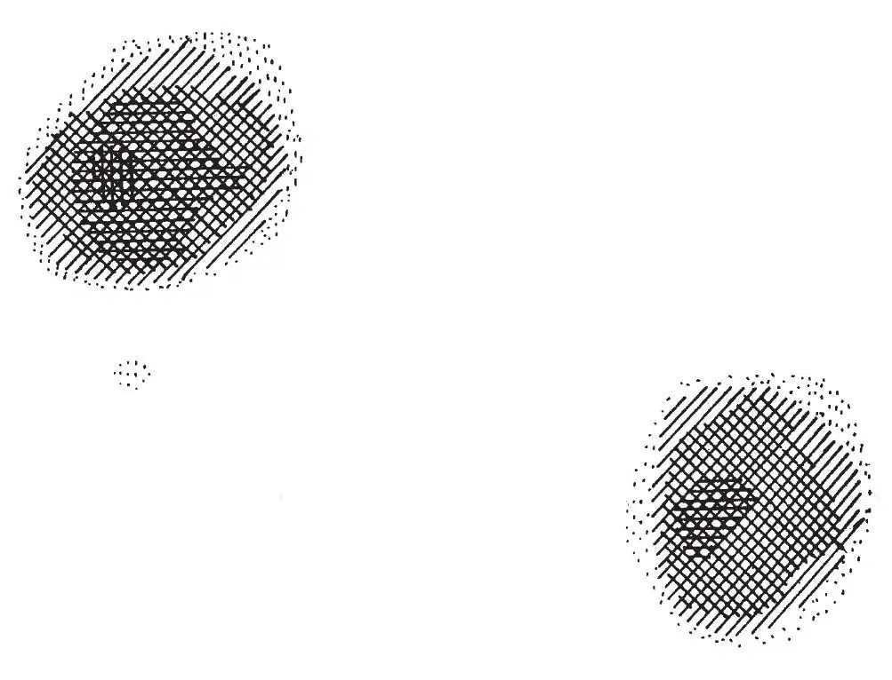
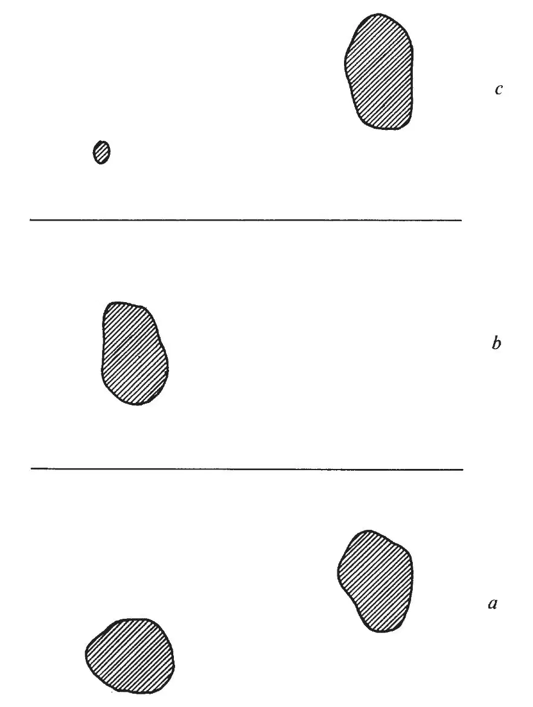

英文
英文劳特布尔
编者按
20世纪40年代，物理学家们掌握了利用核自旋对外加磁场的响应来探索固体和液体的结构的方法。磁场使核自旋态发生能级分裂，而射频辐射可使原子核发生能级跃迁。由于不同的核吸收不同频率的能量，并且化学环境也会影响到这个频率，因此核磁共振技术就可以用来探索样品的化学结构。本文中，化学家保罗·劳特布尔展示了如何利用这一技术获得清晰的空间影像。这一技术——现在被称为磁共振成像，已在基础和应用科学，尤其是在医学中都得到了广泛应用。2003年，劳特布尔和彼得·曼斯菲尔德（后者发展了磁共振成像信号分析方法）共同获得了诺贝尔奖。 英文
一个物体的像可以定义为它的一个或多个特征量的空间分布的图像化表示。成像通常需要该物体与某种物质或辐射场相互作用，且与之作用的物质或辐射场的波长应与期望分辨的物体特征量的最小尺寸相当或更小，从而可能限定相互作用的区域，并产生足够分辨率的图像。 英文
利用诱导局域相互作用可以克服上述波长对成像分辨率的限制，并由此可发展出一类新成像方法：通过施加一个额外场可以将物体与辐射场的相互作用限制在一个有限区域。由此而获得的像的分辨率只是相互作用的标准宽度与由额外场梯度产生的变化量的比值相关的函数，而与波长无关，因为这个相互作用可以看作是两个场借助物体而产生耦合，故建议将基于此技术的成像命名为“zeugmatography”（常被翻译为“共轭成像法”，“结合成像法”或“组合层析成像法”），其来源于希腊语“ζευγμα”，是“结合”的意思。 英文
下面举两个简单的例子来说明该技术的本质。核磁共振共轭成像（现在一般称为“核磁共振成像”或“磁共振成像”）实验采用60 MHz（波长为5 m）的射频场和一个带梯度的静磁场，对质子共振而言，该静磁场的梯度场强为700 Hz·cm–1。实验样品是两根装有水（H2O）的内径为1 mm的薄壁玻璃毛细管，它们被置于一根装有重水（D2O）的内径为4.2 mm的玻璃管中。在第一个实验中，两根毛细管中均装的是纯水，在未施加横向梯度场时，质子共振线宽约为5 Hz。假定发射—接收线圈区域内的信号强度均匀，在施加梯度场后获得的信号代表了实验样品中水含量分布沿梯度垂直方向的一维投影，它是与梯度坐标相关的函数（如图1所示）。绕垂直于梯度场方向的轴转动实验样品（或如图1所示，以样品为轴转动梯度场），获得实验样品的一系列一维投影。以此为基础，采用投影重建的方法[1-5]可构建出表示实验样品水含量分布的二维投影像。利用如图1所示的四个不同方向的一维投影并采用类似于戈登和赫尔曼的投影重建算法[4]，可以构建出如图2所示的20×20的图像矩阵，此图像是由矩阵点间轮廓线插值的描影法来显示，它清楚地表征了这两组圆柱体水的位置和大小。在第二个实验中，一根毛细管内装的是纯水，另一根毛细管中装的是0.19 mM浓度的MnSO4水溶液。在低射频功率（功率约为0.2 mGs）下，这两组毛细管水呈现出几乎相同的核磁共振像（如图3a所示）。但在高功率射频场（功率约为1.6 mGs）作用下，纯水样品的信号被饱和，导致其在同标准等高线图显示的核磁共振像消失；而对于加入顺磁性Mn2+离子的水溶液样品，由于其自旋–晶格弛豫时间T1变短，故信号不容易饱和，其核磁共振像仍然出现，如图3b所示。比较不同射频功率作用下生成的核磁共振像的差分像，即可发现样品中T1时间长的区域得到选择性的突出显示（如图3c所示）。 英文

图1．核磁共振成像实验的三维示意图：其二维投影方向沿着Y轴，四个45°间隔的一维投影位于XZ平面内，箭头所示方向为梯度场方向。 英文

图2．样品的质子核磁共振像：利用如图1所示的四个不同方向的一维投影按文中所述的投影重建方法构建而成 英文

图3．样品中弛豫时间不同的区域的质子核磁共振像：a，低强度射频；b，高强度射频；c，图a和图b的差分像 英文
核磁共振成像是不同于那些传统的核磁共振谱技术，不太受样品大小（以及均匀性）的限制，可以预期，此技术将会被应用于诸多非均匀样品的研究。上述实验证明，这项技术能够用于获得样品中稳定同位素（如H和D）含量的分布图像。在第二个实验中，图像的相对强度取决于对应核的弛豫时间的长短。根据生物组织中水的含量和质子弛豫时间的不同，当外加的梯度场远大于生物组织的内部梯度场时，可以利用有机体中相对窄的水共振信号获得有用的核磁共振像，实现各种生物体软组织的选择性成像。当前，一个非常诱人的可能应用是恶性肿瘤的活体研究。因为恶性肿瘤组织中水的质子自旋–晶格弛豫时间比相应正常组织中的要长得多[6]。 英文
基于上文提到的扫描技术或瞬态方法的共轭成像的基本原理有着诸多不同的潜在应用。将上述实验进行拓展延伸，能够产生显示样品的化学成分、扩散系数以及依靠谱学技术测量的其他特征量的二维或三维图像，这些在以后描述。核磁共振成像技术在液体和液体状的体系中的应用简单且引人注目，这是因为此时梯度场足够大且足以移动较窄的共振信号使其空间位置得以区分。而类似的固体核磁共振共轭成像、电子自旋共振共轭成像以及其他频谱学的共轭成像同样有实现的可能。可以预见，共轭成像技术未来将在微观物质的内部结构、状态和构成的研究中也会被广泛应用。 英文
（王耀杨 翻译；刘朝阳 陈方 审稿）